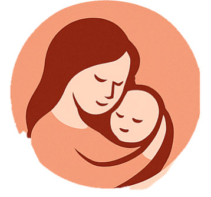

Dubuque Area Pregnancy & Parenting Resource Directory
A quick guide to local pregnancy, parenting, mental health, housing, food, and support
resources in the Dubuque area. Tap a phone number to call directly.
If you are in immediate danger or having a life-threatening emergency, call 911. For emergent mental health concerns, call 988.
⭐ Advice, Mentoring & Parenting Support
Support for the birthing parent and family
📍 3365 Hillcrest Rd, Dubuque, IA
- Free pregnancy tests & ultrasounds
- Parenting classes with incentives
- Free high-quality baby gear
- First Steps: mentoring from ages birth–5 years
- STD testing, education, counseling
📍 200 Mercy Drive, Suite 102, Dubuque, IA 52001
- Prenatal & postpartum care (from birth to 6 weeks)
- Free pregnancy testing (eligibility-based)
- Help applying for Medicaid & insurance
- Pre-registration assistance for hospital
- Postpartum & newborn care education
- Confidential national parenting helpline
- Emotional support
- Zoom support groups
- Help with parenting stress
📍 221 W 9th St, Dubuque
- Free pregnancy testing
- Confidential counseling
- Free maternity & infant clothing
📍 700 Locust St (Lower Level)
- Mentoring for pregnant women & parents
- Relationship and parenting coaching
📍 11893 Kennedy Rd
- Supportive community of moms
- Social connection & parenting encouragement
📍 2460 Kerper Blvd
- Free home visiting support
- Developmental screenings
- Coaching from pregnancy to kindergarten
Local contacts: Jackie (563-582-7949), Sue (563-583-0457)
- Spiritual & emotional support
- Baby supplies & diapers
- Rides, meals, basic financial help
⭐ Early Development & Education
Childcare, preschool, screenings, and early intervention
📍 3505 Stoneman Rd
- Childcare & preschool
- Before/after school care
- Inclusive care (ages 0–18)
📍 2310 Chaney Rd
- Free developmental screening (ages 0–3)
- Early intervention services
📍 1454 Iowa St
Child & Family:
- Free screenings (0–5)
- Immunizations, lead testing
- Parent education
Other VNA:
- Elder home care
- HIV testing, cancer screenings
⭐ Breastfeeding Support
Lactation support groups, pumping help, feeding education
📍 MercyOne Board Room • ☎️ 563-589-9598
🕒 1st, 3rd & 5th Wednesdays • 1–3 PM
📍 1515 Delhi St (3rd Floor)
🕒 Tuesdays 1:30–2:30 PM; every other Tuesday 6–7 PM
⭐ Emotional & Peer Support Groups
Support for mood changes, postpartum emotions, and grief
📍 MercyOne, 6th Floor Boardroom
☎️ 563-587-9406 • 🕒 1st Saturday, 10:30–12
📍 MercyOne, 250 Mercy Dr
☎️ 563-589-9599 • 🕒 Meets 2nd Wednesday monthly
⭐ Shelter, Housing & Crisis Support
Safe housing, domestic violence support, maternity homes
📍 35 N. Booth St
☎️ Shelter: 563-556-3371
☎️ 24-Hour Hotline: 563-556-1100 / 1-800-332-5899
📍 35 N. Booth St
☎️ 563-556-3371 / 1-800-332-5899
📍 1111 Bluff St
☎️ 563-690-0086
📍 PO Box 1691
☎️ 563-513-1988
📍 PO Box 3338
☎️ 563-552-6288
⭐ Health & Mental Health Services
Therapy, psychiatry, reproductive health
📍 2005 Asbury Rd
☎️ 563-583-7357
📍 Iowa City, IA
☎️ 319-337-2111
⭐ Food Resources & Nutrition Support
WIC, food pantries, community food assistance
📍 220 W 7th St (Hillcrest Family Services)
☎️ 563-557-4444
- Resources Unite – 1900 JFK Rd
- Salvation Army – 1099 Iowa St
- St. Stephen’s Food Bank – Cedar Crest Ridge
- St. Vincent de Paul – 1351 Iowa St
- Dubuque Food Pantry – 1598 Jackson St
- Labor Harvest – 423 W Locust
- Multicultural Family Center – 1157 Central Ave
- Maquoketa Community Cupboard – 903 W Platt
- Grace Point – 3100 Windsor Ave
⭐ Weekly Community Meal Calendar (with addresses)
Free or low-cost meals available throughout the week in Dubuque
-
Rescue Mission – 398 Main Street, Dubuque
7:30 AM – Breakfast
-
St. John Episcopal Church – 1458 Locust Street, Dubuque
12:00 PM – Lunch (5th Sundays only)
-
Hope House Catholic Worker – 1592 Locust Street, Dubuque
6:00 PM – Dinner
-
Rescue Mission – 398 Main Street, Dubuque
7:30 AM – Breakfast
-
Rescue Mission – 398 Main Street, Dubuque
12:00 PM – Lunch
-
Rescue Mission – 398 Main Street, Dubuque
5:00 PM – Dinner
-
Hope House – 1592 Locust Street, Dubuque
6:00 PM – Dinner
-
Rescue Mission – 398 Main Street, Dubuque
7:30 AM – Breakfast
-
Rescue Mission – 398 Main Street, Dubuque
12:00 PM – Lunch
-
Rescue Mission – 398 Main Street, Dubuque
5:00 PM – Dinner
-
Rescue Mission – 398 Main Street, Dubuque
7:30 AM – Breakfast
-
Rescue Mission – 398 Main Street, Dubuque
12:00 PM – Lunch
-
St. Patrick’s Catholic Church – 1425 Iowa Street, Dubuque
5:00 PM – Dinner
-
Rescue Mission – 398 Main Street, Dubuque
7:30 AM – Breakfast
-
Rescue Mission – 398 Main Street, Dubuque
12:00 PM – Lunch
-
First Congregational UCC – 255 West 10th Street, Dubuque
5:30 PM – Dinner
-
Rescue Mission – 398 Main Street, Dubuque
7:30 AM – Breakfast
-
Rescue Mission – 398 Main Street, Dubuque
12:00 PM – Lunch
-
Rescue Mission – 398 Main Street, Dubuque
5:00 PM – Dinner
-
Dubuque Community Church Outreach – 1696 Central Avenue, Dubuque
10:30 AM – 1:00 PM – Community meal & outreach
-
Rescue Mission – 398 Main Street, Dubuque
7:30 AM – Breakfast
-
Rescue Mission – 398 Main Street, Dubuque
12:00 PM – Lunch
-
Dubuque Area Labor Harvest – 423 West Locust Street, Dubuque
7:30 AM – Food giveaway
(Every 1st, 3rd, 4th, & 5th Saturday)
-
St. Luke’s United Methodist Church – 1199 Main Street, Dubuque
5:30 PM – Dinner
This directory is for informational purposes only. Availability of services, hours, and eligibility may change.
Please call ahead to confirm details. Additional resources can be found at
resourcesunite.com/resources
or by calling Resources Unite at 563-231-6280. In emergencies, always call 911.